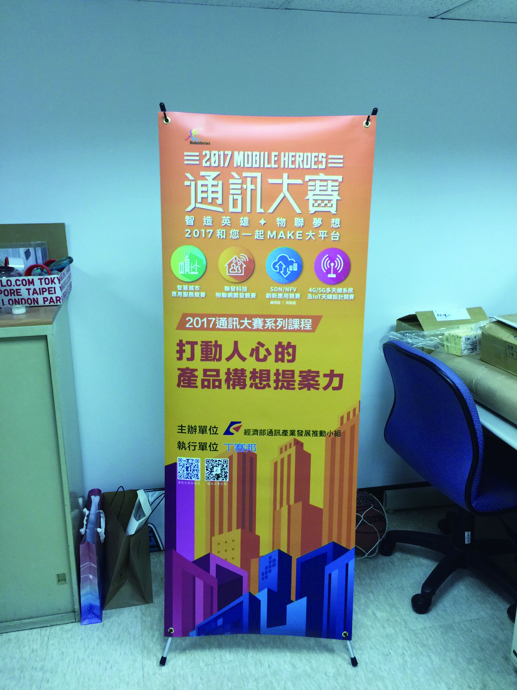

海報設計

這張通訊大賽海報，是由一張主辦單位提供的海報改編而成，原本的海報是橫式的，我重新排版設計，讓海報變成直式的，本來海報的底圖非常多顏色且凌亂，我將底圖多餘的圖案及不需要的資訊刪除，讓海報的整體顏色不會過於花俏，整體還是呈現原海報想呈現的橘色調，字的顏色則是選擇在上面漸層較深的地方擺上白色原海報字型，下面漸層較淺的地方打上深色觀看者該得到的資訊，讓淺色的背景跟深色的字有一個明顯的對比，主辦單位擺在中間偏下的地方，不會過於跟底圖重疊，也讓文字段落有個層次區別。